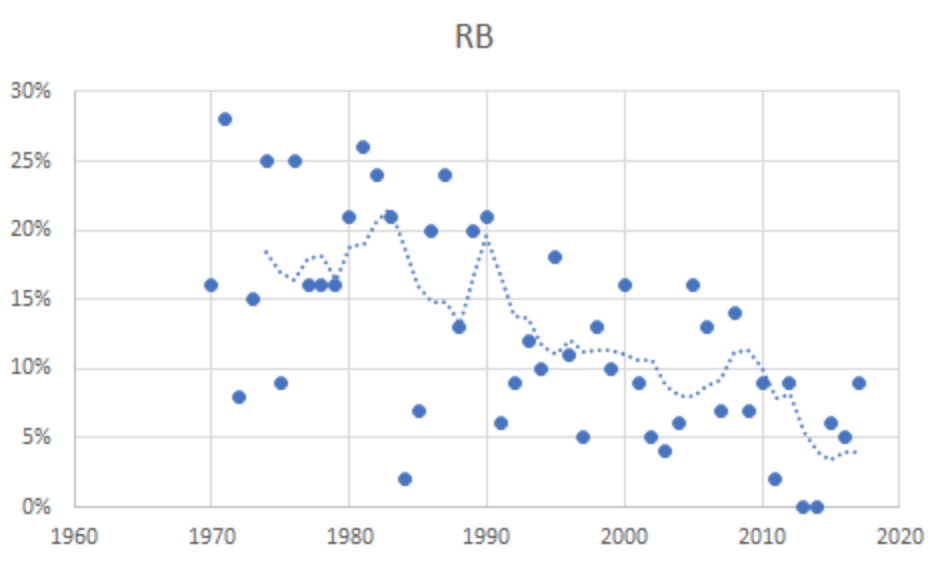
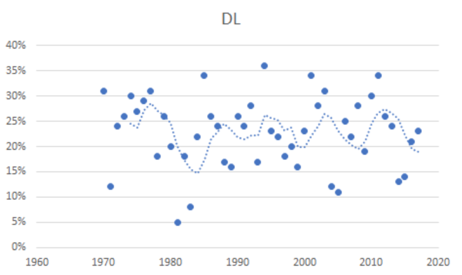

Trench Warfare: Accuracy of NFL Draft Trends
By Jack Melin | May 14, 2018

The relative values of different positions in the NFL can be thought of just like normal commodity values: they are products of both their scarcity and their intrinsic value to teams. As an example, in today’s NFL, runningbacks are neither particularly scarce nor do the majority of them provide significant strategic value above replacement--consequently, the position is considered one of the least valuable in the league. By contrast, quarterbacks are quite scarce (there are, perhaps, fewer truly NFL-capable quarterbacks on earth than NFL teams) and bar-none the most important player on the team. Because of this, their positional value is ridiculously high, a fact most evidently reflected in the size of their contracts: in 2017, the highest-paid runningback in the NFL (Le’veon Bell) earned less than Mike Glennon, the 21st-highest paid quarterback. Bell is one of the most uniquely talented players in the NFL. Mike Glennon isn’t even a starter for his team.
As the NFL has evolved over time, these values have evolved as well. NFL history is rife with strategic innovations and trends which changed demand for players at different positions. As an extreme example, in 1900 NFL offenses had not yet developed the forward pass–as one can imagine, the value of wide receivers has increased since then. As was mentioned, contract size can be a solid indicator of positional value; unfortunately, historical variations in NFL salary cap rules make it difficult to compare contracts one year to the next.
However, another indicator of value exists which has stayed relatively unchanged, at least since the NFL merger in 1970: the draft. By comparing how highly different positions are drafted, one can identify trends in positional valuation over a long time scale. By cross-referencing relative values of first-round picks in the NFL draft with historical draft data, we can calculate the total proportion of first-round draft capital invested in each position over time.
With this method, we can uncover objective evidence of long-term trends in NFL history. For instance, Figure 1 displays the proportion of overall draft capital invested in the runningback position between 1970 and 2017 along with a 5-year moving average of the data. As can be seen, runningbacks have lost a significant amount of value over the time scale displayed. In 1975, teams invested an average of 18% of their first-round draft capital in runningbacks. In 2017? The average has dropped to just 4%. This dropoff is direct evidence of one of the key long-term trends in NFL strategy over the past few decades: where offenses once centered their game plan around rushing, they have progressively focused more and more on spread-out, pass-oriented strategies.
Perhaps more intriguing, however, is the potential for this sort of analysis to reveal more short-term trends in positional valuation. Figure 2 displays the proportion of overall draft capital invested in defensive linemen between 1970 and 2017 along with a 5-year moving average of the data. Unlike running backs, defensive linemen have not seen their value increase or decrease very much on a long time scale. However, there is a periodic (almost sinusoidal, really) trend in their valuation with a period of about 9 years. Especially starting with the peak in 1994, defensive line investment follows a wave with a maximum at about 27% and a minimum at about 19% remarkably closely.
It is not immediately clear why this trend arises. It doesn’t seem linked to any other position in particular, nor do any other positions exhibit the same kind of striking periodicity in their values. In all likelihood, it is at least partially a product of repeated market over-corrections--after a period of overdrafting defensive linemen, the league collectively underdrafts the position in order to rebalance, tanking its value until it becomes scarce and the opposite happens. In this case, general managers would do well to apply a sort of contrarian investment strategy: draft defensive linemen when the league is oversaturated and sentiment is down, so that you can avoid overpaying during the next peak. If this trend continues--a seemingly foregone conclusion given the consistency of the data--the league is due for a massive upswing in defensive line investment over the next few years. It doesn’t take any number crunching to see that we are in the trough of the trend right now; barring an unprecedented break from the norm, the league is about to begin overdrafting defensive linemen, running up to a peak at ~27% in 2021. It’s possible that the value spike could start as soon as this offseason, and once it does, it will last until the league cools down after the peak. General managers, the bottom line is this: if your team needs defensive linemen, you’d better act fast. They’re not going to go on sale again for years.